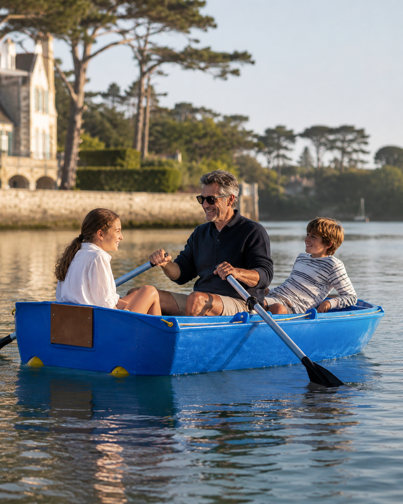
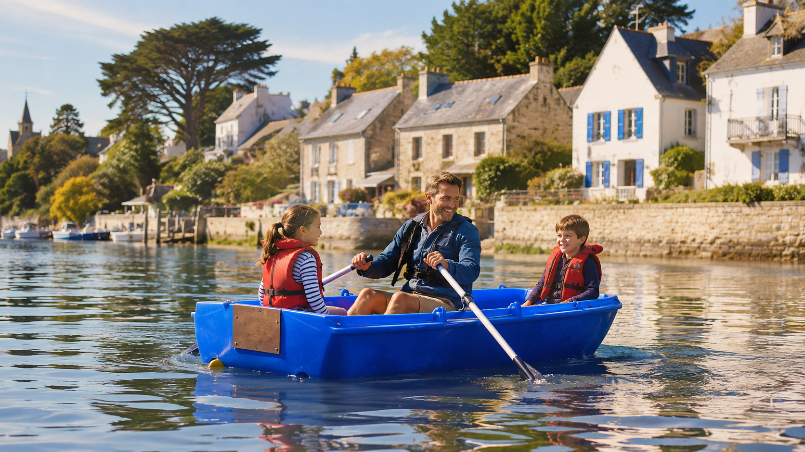

Contact
En cas de besoin :
06 33 83 55 25
guide visiteurs
Accédez au guide privé du Clos de la Voilerie : informations pratiques, règlement intérieur et idées de sorties pour préparer votre séjour.
Vos informations ne seront pas publiées. Les offres futures ne seront envoyées que si vous cochez l’option correspondante.

informations utiles
Gardez cette page sous la main pendant votre séjour. Elle n’est pas accessible depuis les menus du site.
infos pratiques
En cas de besoin :
06 33 83 55 25
Arrivée à partir de 16h. Départ avant 10h, sauf accord préalable.
Réseau : Le Clos de la Voilerie
Mot de passe : Magellan
l’expérience signature
La barque est mise à disposition gratuitement pour les visiteurs du Clos de la Voilerie, uniquement lorsque les conditions météo et de marée le permettent.
Pour obtenir le code du cadenas, merci de lire les règles d’utilisation. Elles sont simples, mais importantes : l’estuaire reste un vrai milieu marin.
Ce code est réservé aux visiteurs du Clos de la Voilerie ayant lu et accepté les conditions d’utilisation de la barque.

nos recommandations
Voici une sélection de promenades, d’activités et de plaisirs gourmands que nous aimons particulièrement dans la région.
Prenez le thé avec un bon gâteau chez Monsieur Papier à la Pointe du Raz. Pour nous, la plus jolie manière de découvrir le site est de randonner depuis la Pointe du Vent (parking des moulins de Trouguer), avec un magnifique panorama sur la Pointe du Vent, la Pointe du Raz, l’île de Sein et la baie des Trépassés.
Une activité idéale pour les petits comme pour les grands. Le spectacle d’oiseaux est vraiment très sympa.
Le mercredi ou le samedi matin, mangez une crêpe beurre-suc’ chez Fred (le camion orange), puis achetez des crabes et des huîtres juste en face.
Une jolie balade, surtout le mardi soir pour le marché de producteurs et les concerts. Départ possible d’Audierne à vélo, avec location à l’Escapade Nautique.
Une belle manière de découvrir le paysage autrement. Et si vous avez de la chance, Randy le dauphin pourrait bien être de la fête.
Allez boire un cocktail à La Renverse à Audierne, dégustez un plateau apéritif et admirez le coucher du soleil.
Prenez le bateau pour une journée sur cette petite île mystique sans voiture (50 minutes de traversée), idéale pour les enfants et les chiens. Nous recommandons le tartare d’huîtres et d’algues chez Brigitte sur le quai Paimpolais, puis la montée au phare pour profiter d’une vue complète sur l’île.
Promenez-vous autour du Port Rhu et visitez le musée du Port. Pour déjeuner, nous aimons les fish & chips de Pesket sur les quais, ou le Bigorneau Amoureux pour une cuisine de bistrot délicieuse.
bonnes adresses
encore plus d’idées
règlement intérieur
offres visiteurs
Pour un prochain séjour en Bretagne, contactez-nous en direct avant de réserver sur une plateforme. Nous pourrons vous proposer nos meilleures conditions selon les dates disponibles. Ce code vous donnera accès à une réduction de 5% supplémentaire sur votre prochain séjour, pour vous ou pour vos proches.